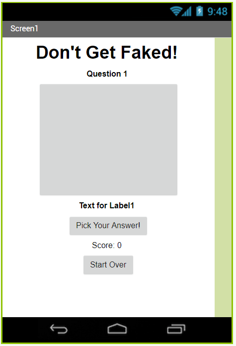
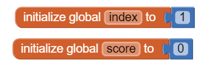
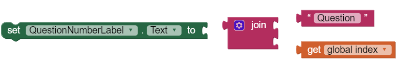
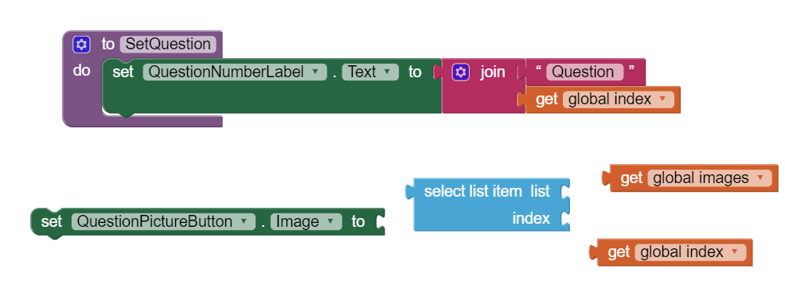
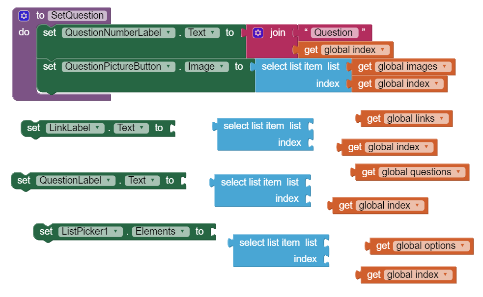
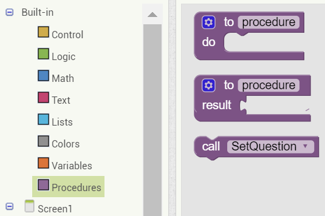
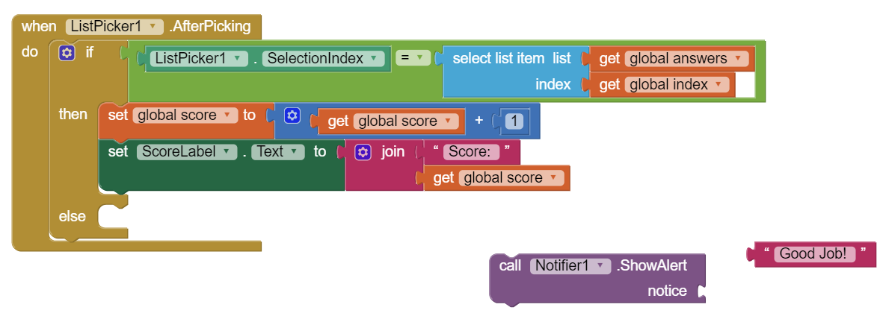

Let's make a quiz app that can test a user's ability to detect if a story is fake or not.

There are four key elements to our quiz app: the question, the image, the possible answer choices, and feedback to the user.
We also have the question number, a link (the source of the news article in question), and the score.
2. Create lists
Click on the Blocks button on the right side top bar.
Click on the Variables drawer on the left and drag two initialize global name blocks into the workspace.
Some global variables have already been created for you--questions, answers, images, options, and links.
Let's rename our new global variables to "index" and "score".
3. Set score and index
Click on the Math drawer on the left and drag in two 0 blocks.
Set one of the 0 blocks to "1".
Connect the "1" block to "index" and the "0" block to "score".

"Index" will keep track of what question number we're on. In this version of the quiz, we have three questions in total.
"Score" will keep track of how many answers the user has gotten right.
4. Create SetQuestion procedure.
Click on the Procedures drawer on the left and drag out a to procedure block.
Rename this new procedure to "SetQuestion".
This procedure will help us cut down on repetitive code. Every time we need to set a new question, we can call this procedure instead of rewriting the same code again and again.
5. Set QuestionNumberLabel.Text
Click on the QuestionNumberLabel drawer, and drag out a Set QuestionNumberLabel.Text block.
Click on the Text drawer and drag out a join block and an empty text block.
Click on the Variables drawer and drag out a get block.
Set the empty text block to say "Question".
Set the get block to "Index".

Now, snap the Question and the get index blocks into join, and snap join into Set QuestionNumberLabel.Text.
6. Set QuestionPictureButton.Image
Click on the QuestionPictureButton drawer, and drag out a Set QuestionPictureButton.Image block.
Click on the Lists drawer, and drag out a select list item block. This block will let us pick an item from a list at a given index.
Click on the Variables drawer, and drag out two get blocks. Set one to images and one to index.

Finally, snap the blocks together so that your new line of code sets the image of the button to the picture in the images list at the correct index.
7. Finishing up SetQuestion
Now that you've done two sets, you should be able to do three more: set LinkLabel.Text, set QuestionLabel.Text, and set ListPicker1.Elements.
For all of them, you need to use select list item with the appropriate list (links, questions, and options).
Note that "Elements" is a list--so options is actually a list of lists.

8. Setting the first question
When we first open the screen, the first question should automatically load. We can do this with our new SetQuestion procedure.
Drag out a when Screen1.Initialize block from the Screen1 drawer.
Drag out a SetQuestion block from the Procedures drawer, and snap it into the event block.

9. Displaying the article link
As this is a quiz about news, our quiz has to include sources, too. Let's have the link display when the image button is clicked, and become invisible when the button is clicked again.
In other words, when the link is visible, set it to invisible, and vice versa.
From the Control drawer, pull out an if then block.
Click on the blue gear to add an else to the block.
From the LinkLabel drawer, pull out a LinkLabel.Visible block, and two set LinkLabel.Visible blocks.
From the Logic drawer, pull out a true and a false block.
Snap these blocks together so that if the link label is visible, visibility is set to false, otherwise it is set to true.
10. Checking for a correct answer
Users can select an answer by picking from the ListPicker. After they pick an answer, an event is triggered: When ListPicker1.AfterPicking.
Pull out one of these event blocks from the ListPicker1 drawer.
ListPicker1.SelectionIndex will give us the index of the answer the user picked. The correct answer indices are given in answers.
In code, this would be:
if ListPicker1.SelectionIndex = select list item get global answers, get global index
then we got a correct answer, and we can increment the score!
else we got a wrong answer, and we can decrement the score.
11. Handling a correct answer
When we get a correct answer, three things should happen:
1) the score increases,
2) the Notifier should show an alert,
3) the app should advance to the next question.
12. Handling a correct answer, continued
Drag out a set global block and a get global block.
Set both of them to score.
Now, drag out a __+__ block from the Math drawer, as well as a 0.
Change the 0 to a 1.
Snap these blocks together so that score = score+1.
Finally, pull out a set ScoreLabel.Text block, a join block, and an empty text block.
Snap these blocks together to update the score label appropriately (ScoreLabel.Text = joinScore: , get global score).
13. Handling a correct answer, continued
From the Notifier1 drawer, pull out a call Notifier1.ShowAlert block.
Connect an empty text box to the ShowAlert block, and set the text of that block to "Good job!"

Now, whenever a user gets an answer correct, an alert saying "Good job!" will pop up.
14. Handling a correct answer, continued.
Just like we incremented the score two steps ago, we need to increment the index variable, because we want to move onto the next question.
Right click on the score increment line, and click "Duplicate." Change "score" to "index".
Call the SetQuestion procedure.
15. Handling a wrong answer
Much of this code is the same as what we do for a correct answer, except in reverse. We need to decrement the score and show an alert.
Pull out a __-__ block from the Math drawer.
Duplicate blocks from before so that score = score-1.
Duplicate the set ScoreLabel.Text line from above.
Duplicate the Notifer1.ShowAlert block from above, and change the message to say "Oh no...try again!"
16. Handle the Restart button
When the quiz restarts:
1) the score needs to be updated (and the score label),
2) the index needs to be set back to 1,
3) and we should call SetQuestion.
All four of these lines of code have been written previously in this tutorial.
17. Test it out!
Try it out on your device. Tap on the picture button and the reset button. Do they work? What about the ListPicker? Does your app detect right or wrong answers?
Change up this basic tutorial by adding more features using the ideas in the next section.
18. Expand your app
Add more questions.
This app only has the first three questions from the Don't Get Faked quiz on the Youth Radio website. Add more questions!
Add previous and next buttons.
Add two more buttons so that the user can go back and forwards instead of only forwards on a right answer.
Improve feedback.
In the current version of this app, a right or wrong answer generates a notification. Add a better feedback system of your own choice.
Fix a potential bug.
Right now, the app does not check whether the index exceeds the length of the list. If you go too far, the app crashes. Add a check to make sure that this doesn't happen.
Sharing.
Add the ability to save and share your highest score!